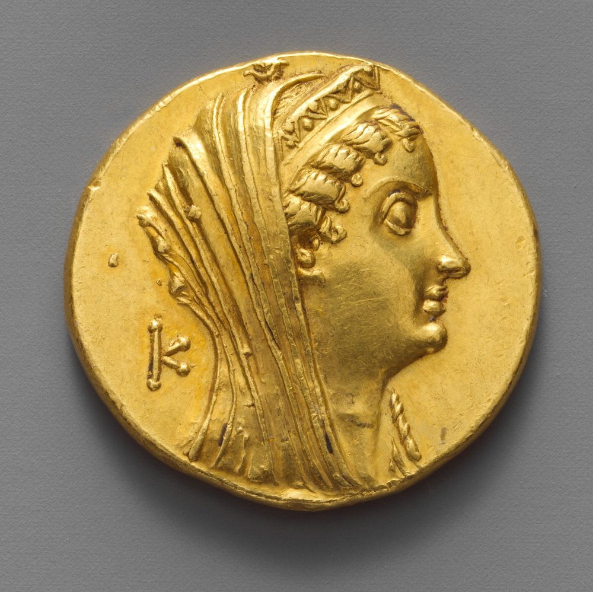
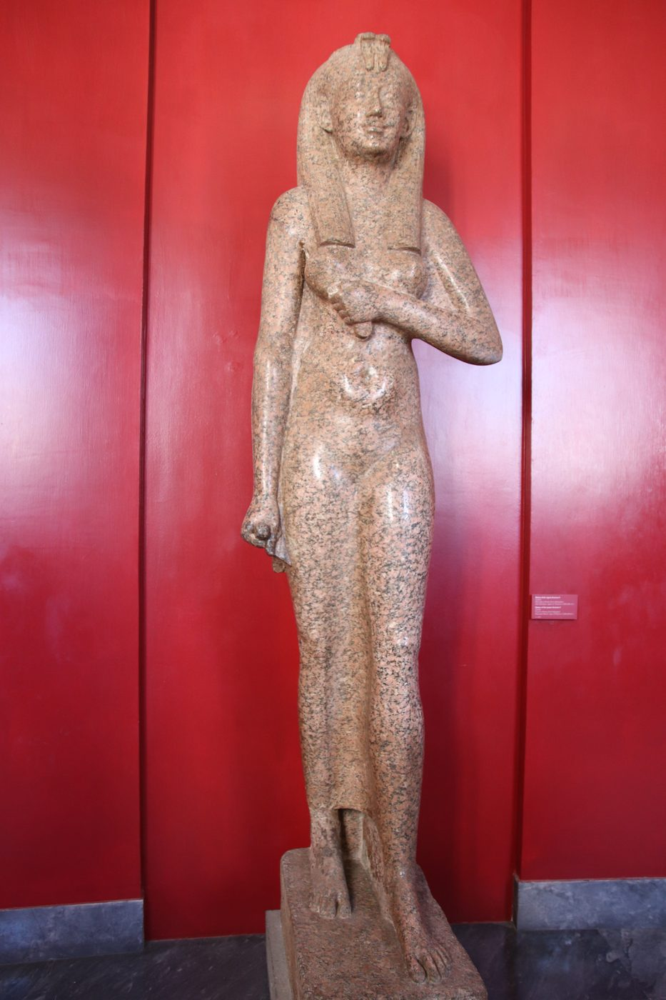
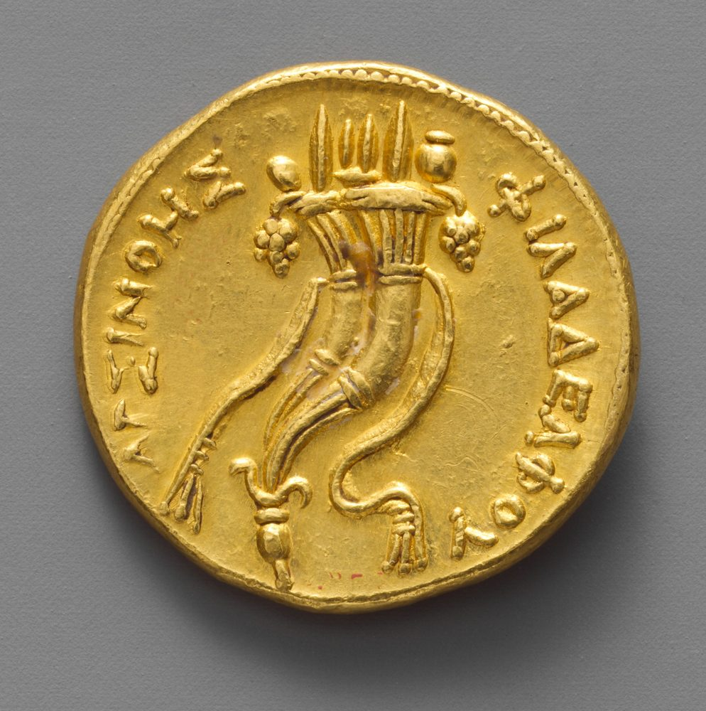
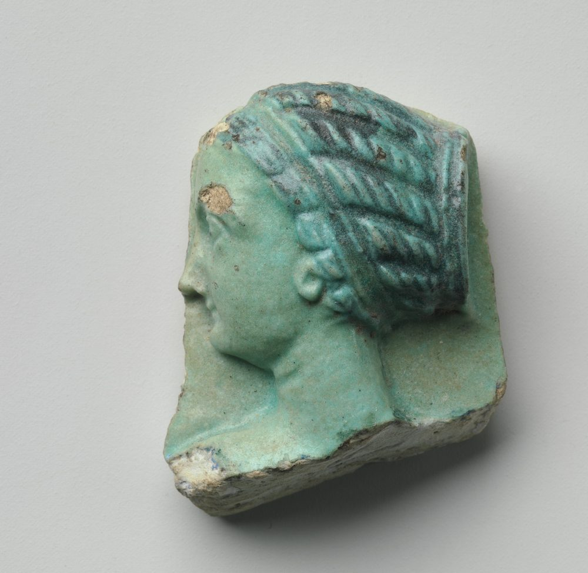

Unit 7 · Women in ancient Greece · Lesson 15
Arsinoe II: queen, goddess and influential woman
A Macedonian Greek queen of Egypt who became a goddess. What do a coin, a vase fragment, a decree and a poem show of her, and how far can we judge her significance?
Year 11 Ancient History · Present with → or space · Read on a phone with R

Images: The Met (CC0 1.0). Full details on the last slide.
Review · books closed · 6 minutes · press K for the timer
Five questions from Lessons 12–14
- In Select Papyri I 65 (Lesson 13), who lends the money, who acts with her, and what does she take in place of interest? Demetria lends 400 drachmas in copper, “with her guardian Apollophanes”, and takes a lease on a tower in place of interest. A Greek document, 221–220 BCE.
- What do Apollonia’s loans show about guardians, and what is the limit? Her Greek loans of 131–127 BCE name her husband Dryton as guardian (a fragmentary Greek loan notes none; a Greek loan of 124 BCE, after he died, names another man). Vandorpe’s list names no guardian on her demotic (Egyptian-law) loans: that is the list’s silence, not proof there was none. One woman. Bagnall says Greeks in Egypt “adhered to” the guardian rule “strongly”.
- What did Philista and Nikaia ask the king for? Philista, who calls herself “a working woman”, asked him to order his officials to act against Petechon, who had scalded her at the village baths (about 221 BCE). Nikaia, a widow (January 218 BCE), said she had “no relative who can serve as my guardian” and asked him to order the strategos to appoint one. A translation that names no guardian for Philista does not show she had none.
- Who made Idyll 15 (Lesson 14), and what does it say of Arsinoe II and her festival? Theocritus, a Greek poet from Sicily who probably lived in Alexandria, about the 270s BCE. The poem puts Arsinoe II as the host of an Adonis festival at the palace: the song celebrates Adonis, and the next day brings the mourning. The limit: it is a poet’s evidence, probably written for the court, not a record of the festival.
- Writing · rewrite with This Does That (Lesson 12): “The clause shows that Heracleides could not marry again.” The clause forbidding Heracleides “to bring home another wife in insult of Demetria” protects her place as his wife, which suggests that the contract’s makers meant to secure it in writing, although it shows only what they set down. The original has “shows” plus a paraphrase, no precise verb and no hedge, and it overclaims: the clause bars bringing home another wife “in insult of Demetria”, not every later marriage.
Mark your own answers in a different colour. Which question did you find hardest?
Learning intentions and success criteria · 2 minutes
Today’s goals
- explain the role and significance of Arsinoe II
- assess significance in a short answer with a judgement of degree
- outline Arsinoe II’s life, cult and image, with evidence
- explain why historians disagree about her political power
- write an ‘assess’ answer whose Judge and Resolve state the same degree
Syllabus outcomes: AH-11-02 proposes ideas about the varying causes and effects of events and developments · AH-11-03 explains the role and significance of forces, features, events, individuals and groups in shaping the past · AH-11-07 communicates historical understanding, applying historical knowledge, terms and concepts. Life Skills: AH-LS-06 investigates people, events or developments of the ancient world · AH-LS-11 communicates information about the past using historical terms and concepts.
Note-making · the routine for the whole course
How to structure your notes
questions and key terms, written after
short phrases, arrows (→ leads to), abbreviations (c. = about; BCE = Before the Common Era)
- 1A new page for each lessonA cue column about a quarter of the page wide; title and date at the top; room for a summary at the bottom.
- 2Listen and look, then writeDon’t copy while a slide is being explained. Phrases, not sentences; a date and a maker for every source.
- 3Write your own notes at each ✎ checkpointThen compare with the model notes, one row at a time. Add what you missed in a second colour.
- 4Write the cue questions afterwardsUse exam verbs: identify, describe, explain, assess. To revise, cover your notes and answer the cues.
- 5Finish with a three-sentence summaryTwo checkpoints today: her life, cult and image · the historians, after you write. Your 8-mark answer goes in your answer booklet, not your notes.
Key vocabulary · add to the unit word wall
Words for the queen and for assessing
| Writing terms | Meaning |
|---|---|
| Assess | NESA: ‘Make a judgement of value, quality, outcomes, results or size.’ In History (department advice): a judgement of degree, weighed against evidence on both sides. |
| Judgement of degree | entirely · largely · to a significant extent · partly · only to a limited extent · not at all |
| Added today | Meaning |
| Criterion (criteria) | The standard you judge by: significant for whom, or for how long? Different criteria can give different degrees. |
| Content terms | Meaning |
|---|---|
| Ruler cult | Worship of a living or dead ruler as a god, such as the Sibling Gods (Theoi Adelphoi). |
| Philadelphos | ‘Sibling-loving’: Arsinoe II’s cult title; later writers also gave it to Ptolemy II. |
| Decree | A formal decision of a city or council, often inscribed on stone. |
| Added today | Meaning |
| Kanephoros | ‘Basket-bearer’: a woman who carried the sacred basket in a procession. The kanephoros of Arsinoe Philadelphos is named in the date of documents. |
| Octadrachm · faience | A large coin worth eight drachmas · a shiny glazed material (here blue-green) used for small objects and vases. |
1 · I do · her life on a timeline · most dates are approximate or debated
Arsinoe II: three marriages, then a cult
- about 318–314Born. A reconstruction, worked out from the assumed date of her first marriage (Bartels on Carney).
- about 300Marries Lysimachus, king of Thrace.
- 281/0After Lysimachus’s death, marries her half-brother Ptolemy Keraunos (Caneva).
- about 276/275Back in Egypt, marries her full brother, Ptolemy II (Bartels; other scholars’ dates differ by a few years).
- by 272/1A priest of Alexander and the Sibling Gods (Theoi Adelphoi) is recorded: Ptolemy II and Arsinoe II, worshipped together (Caneva).
- 270 or 268She dies. Which year is debated (Attic Inscriptions Online; Caneva).
- about 261–246Gold octadrachms naming her, ΑΡΣΙΝΟΗΣ ΦΙΛΑΔΕΛΦΟΥ (‘of Arsinoe Philadelphos’), are struck (the Met’s date for its coin).
- 221–220A Greek loan in Egypt is dated by “the kanephoros of Arsinoe Philadelphus” (Select Papyri I 65).
Why is she the unit’s second influential woman? Think first.
- 1Greek and Ptolemaic evidenceA coin, a vase fragment, an Athenian decree and a poem, made for or about Greeks; beside them some Egyptian evidence for the same queen.
- 2A queen who became a goddessWorshipped with her brother-husband in her lifetime, and with her own cult, probably begun after her death.
- 3A cult that outlasted herHer kanephoros is still named in a date about fifty years after she died.
1 · I do · her cults · a Greek document, then Egyptian evidence
A queen who became a goddess

Images: Gary Lee Todd (Public domain). Full details on the last slide.
… the priest of Alexander and the gods Adelphi and the gods Euergetae being Nicanor son of Bacchias, the kanephoros of Arsinoe Philadelphus being Aristomache daughter of Ptolemaeus …
A date formula, 221–220 BCE · trans. A. S. Hunt and C. C. Edgar, Select Papyri I (Loeb, 1932), no. 65 · “gods Adelphi” = the Sibling Gods
What does the date formula name? What does it not tell us? Think first.
- 1Two cults“The gods Adelphi” are the Sibling Gods, Ptolemy II and Arsinoe II together; “the kanephoros of Arsinoe Philadelphus” belongs to her own cult. A woman, Aristomache, holds it.
- 2After her deathThe date is about fifty years after she died, so her cult was still in use. In Egyptian temples too: stelae from Mendes and Sais, written in Egyptian, install her there, probably after her death (Caneva).
- 3A limitA cult shows how she was honoured. It does not show what she did in life.
1 · I do · think aloud on the coin · a Greek coin and a faience fragment
Two images of her: what is each evidence of?


Images: The Met (CC0 1.0) · The Met (CC0 1.0) · The Met (CC0 1.0). Full details on the last slide.
- 1Who and whenThe coin: about 261–246 BCE (the Met). She died in 270 or 268, so it was struck after her death. The Met lists it under the king, Ptolemy II; the legend names her. The vase fragment: 278–270 BCE, the Met’s date, so in her lifetime; the Met files it under Egyptian Art.
- 2So what is each evidence of?The coin is evidence of how she was honoured and remembered after her death (probably in her cult) more than of her power. The vase fragment is a royal image the Met dates to her own years.
- 3A limit on bothBartels says that from about 276/275 “we possess ample evidence for Arsinoë, but it only concerns royal self-representation”. Both are images a royal court wanted made.
Notes checkpoint 1 of 2
Her life, her cults and her image
2 · We do · in pairs · 2 minutes to read the four cards · then the grid
Four cards: a coin, a vase, a decree and a poem
A gold octadrachm, about 261–246 BCE (the Met, 30.115.23): a veiled head and a double horn of plenty; the Greek on the back, ΑΡΣΙΝΟΗΣ ΦΙΛΑΔΕΛΦΟΥ. Struck after her death. Greek.
A faience fragment showing her head, 278–270 BCE (the Met’s date, 26.7.1017), filed under Egyptian Art: dated by the Met to her own years. Faience; Egyptian Art.
… doth the daughter of Berenice, even Arsinoe, lovely as Helen, cherish Adonis with all things beautiful.
About the 270s BCE · prose trans. Andrew Lang (1880) · a poet’s evidence, probably written for the court (Lesson 14): the song celebrates Adonis, and the next day brings the mourning
king Ptolemy in accordance with the predilection (proairesei) both of his ancestors and of his sister is manifest in his concern for the common freedom of the Greeks
IG II³ 1 912 = IG II² 687 · 269/8 or 268/7 BCE (Attic Inscriptions Online gives 269/8; Caneva 268/7) · trans. Sean Byrne, Attic Inscriptions Online (CC BY-SA 3.0) · only this clause is used · AIO’s note names “his sister” as Arsinoe II and says “we do not know if this mention of her is posthumous” · proairesis: a chosen course of action
Words: predilection a preference · manifest clear · posthumous after her death · cherish look after fondly. Greek or Egyptian? Cards A, C and D are Greek (a Greek coin legend, an Athenian decree, a Greek poem); card B is faience, held by the Met’s Egyptian Art department.
Pairs: for each card, who made it, when, and what does it name or show?
2 · We do · in pairs · 3 minutes · one card may fill only some cells: write “not shown” when it does not
Significance for whom, and for how long?
| Card | For the dynasty | For later queens | For Greek women | How long |
|---|---|---|---|---|
| A · coin | ||||
| B · vase | ||||
| C · decree | ||||
| D · poem |
What each column asks: for the dynasty did it help the Ptolemies keep or show their power? · for later queens is there a sign that later queens followed her? · for Greek women does it show a Greek woman holding a role or honour? · how long is she still honoured or remembered later? A cell holds a fact from the card, not a verdict.
Pairs: which cell was hardest to fill, and why?
| Card | What it is | Date | Made by |
|---|---|---|---|
| A | gold coin; the legend names Arsinoe | about 261–246 BCE (after her death) | issued under King Ptolemy II; Greek legend |
| B | faience vase fragment; her head | 278–270 BCE (the Met) | a maker unknown; the Met files it under Egyptian Art |
| C | an Athenian decree; “his sister” | 269/8 or 268/7 BCE | Athens (Chremonides proposed it) |
| D | a poem; the song names her | about the 270s BCE | Theocritus, a Greek poet |
2 · We do · 4 minutes · does “of his sister” show her policy, or a queen’s prestige? · three historians’ views, attributed
A powerful queen, or a queen’s prestige?
H1 · Tarn (1913), with Macurdy (1932) and Pomeroy (1984)
Caneva (2013) says a picture of Arsinoe as a very powerful court schemer dominated much twentieth-century writing, and lists these three historians among its supporters.
In short: Tarn read her as promoting a plan to drive the Macedonian king Antigonos Gonatas from his throne. Their own pages were not seen: this is Caneva’s account.
H2 · Stanley Burstein (1982)
‘Arsinoe II Philadelphos: A Revisionist View’, in Adams and Borza (eds), Philip II, Alexander the Great and the Macedonian Heritage, pp. 197–212.
In short (Caneva’s account): he asked historians to stop contrasting an active Arsinoe with a passive Ptolemy, and he developed the reading that “of his sister” was a courtesy tied to the king’s promotion of her cult. Burstein’s own pages were not seen.
H3 · Elizabeth Carney (2013)
Arsinoë of Egypt and Macedon: A Royal Life (Oxford University Press, 2013), as reviewed by Jens Bartels (Bryn Mawr Classical Review 2013.09.54).
She sides more with Stanley Burstein’s sceptical view on the image of Arsinoë as a ‘tigress queen’, but warns against rewriting her as a “sort of royal housewife” (144).
In short: Bartels’s words about Carney; her own book was not seen.
Pairs: using card C and the three views, argue one reading of “of his sister”, and say what would test it.
- A reading of the clause: her own policy, or a courtesy to a king and his dynasty.
- Evidence for it: the clause’s wording, the date (AIO: we do not know whether she was already dead), who wrote it and why.
- A limit: one clause in an Athenian decree.
- A degree, not yes or no.
3 · Writing focus · 7 minutes · I do → We do → apply
Writing focus: one degree, one criterion, Judge and Resolve
Assess (NESA): ‘Make a judgement of value, quality, outcomes, results or size.’ Department advice: name a degree and the criterion you judge by, then end at the same degree.
Worked example, written for this lesson, on Aspasia, not on today’s question: Assess the significance of Aspasia of Miletus.
Judged by what the sources let us show of her actions, Aspasia was partly significant, because the main sources we have seen are a comedy, a dialogue by Plato, Xenophon’s Socratic works and a biography written more than five centuries after Pericles. […] On balance, then, judged by what the sources let us show of her actions, Aspasia was partly significant, since even Plutarch reports her influence only “as some say”.
Judge · a criterion and a degree word
Because · the reason, then the evidence […]
Resolve · the same criterion, the same degree
Open your answer with one sentence: a degree word and the criterion you judge by, before any evidence. Don’t copy the Aspasia sentences.
“Judged by …, … was … significant, because …”
Your Writing toolkit (booklet pages 3–4): judgement of degree.
A second Aspasia Judge. Vote on its degree on “3, 2, 1, show”:
Judged by how long she was remembered, Aspasia was significant to a significant extent, because writers from Aristophanes in 425 BCE to Plutarch about 100–120 CE kept returning to her.
- entirely
- largely
- to a significant extent
- partly
- only to a limited extent
- not at all
Thumb up = largely · sideways = as it stands · thumb down = partly. Then fix this Resolve to match the Judge you chose: “Ultimately, then, judged by how long she was remembered, Aspasia was only slightly significant.”
Up, largely: the four kinds of writer count for more than their number. As it stands: the span, 425 BCE to about 100–120 CE. Down, partly: being remembered does not show what she did. Any is defensible; the Resolve must repeat that degree and criterion: “Ultimately, then, judged by how long she was remembered, Aspasia was [your degree] significant.”
3 · You do · 19 minutes in all · deconstruct and check first (3 minutes)
An 8-mark assess question: deconstruct it first
Assess the significance of Arsinoe II. 8 marks
Deconstruct it: what does this question ask you to do?
| Step | This question |
|---|---|
| Verb | Assess: NESA, ‘Make a judgement of value, quality, outcomes, results or size.’ So: a judgement of degree, weighed against evidence on both sides (department advice). |
| Topic | the significance of Arsinoe II: significant for whom, and for how long? Significance depends on the criterion you judge by |
| Limits | Arsinoe II only; the evidence you have seen (coin, vase fragment, decree, poem, date formula, historians); Greek and Egyptian evidence named as such; every hedge kept |
| Do | 8 marks: a developed paragraph with a judgement (department advice). Open with a degree and the criterion you judge by; weigh evidence for and against, with its date and maker; end at the same degree |
Check first: what must your first and last sentences have in common?
The same degree word, and the same criterion. The first sentence states them; the last sentence returns to them. The evidence comes between.
3 · You do · timed 12 minutes · press K, click 12 and start · your grid and cards are open
Write your 8-mark answer
Assess the significance of Arsinoe II. 8 marks
- Open with your Judge: a degree word and the criterion you judge by (the first 2 minutes).
- Weigh the evidence for and against, each piece with its date and maker.
- Say what a piece of evidence cannot show, then end at the same degree and the same criterion.
Compare Carney’s Arsinoe with the older picture of a powerful queen behind policy: what changed in historians’ questions and methods? Use card C and the three views; Bartels’s account of Carney is his, and her own book was not seen.
Use your grid (and the facts card). Word bank:
Frame (form only): “Arsinoe II was [degree] significant for …, because …; however …; on balance, …”
3 · You do · 4 minutes · after the timer · check your own answer
Check your answer against what a strong answer includes
Read your answer through with a different-coloured pen. Circle your degree word in the first sentence and in the last: are they the same? Underline your criterion in both. Tick each point you can find, then add one missing point in the margin.
Cold call: which degree word and criterion did you open with, and does your last sentence match them?
- A degree and a criterion in the first sentence, not yes or no.
- Evidence for and against, each piece with its date and maker, Greek and Egyptian evidence named as such.
- What a piece of evidence cannot show: a hedge matched to it.
- Historians attributed, not “some say”: who, and through whom you know it.
- The same degree and criterion in the last sentence.
Check · 4 minutes · pens down · vote with your A, B, C or D card on “3, 2, 1, show”
Why is a gold coin of Arsinoe II weak evidence of her political power?
- ACoins were not used as money in Egypt, so no coin could show a queen’s power.
- BIt was struck after her death, so it shows her honour and memory more than her deeds.
- COnly kings appeared on Ptolemaic coins, so this head must really be Ptolemy II’s.
- DIts Greek legend names Ptolemy I, not Arsinoe, so it is not evidence about her at all.
The Met dates the coin to about 261–246 BCE and she died in 270 or 268, so it was struck after her death: evidence of how she was honoured and remembered (probably in her cult), not of what she did in life. A is wrong: the coin is itself gold Ptolemaic coinage. C is wrong: the Met lists the coin under the king who issued it, but the legend on the back, ΑΡΣΙΝΟΗΣ ΦΙΛΑΔΕΛΦΟΥ, names Arsinoe. D is wrong: that same legend reads ‘of Arsinoe Philadelphos’, not Ptolemy I.
Check · exit ticket · 4 minutes · collected
Exit ticket: the degree word in my Judge and in my Resolve
Write the degree word from your Judge and the degree word from your Resolve, side by side, and the criterion you used in both.
If they do not match, rewrite your Resolve so that they do. Hand it in with your answer. Then tick the “I can” statements you can do, and circle the one you are least sure of (1 minute).
- Two degree words from the scale, and they are the same word: for example ‘partly … partly’ or ‘largely … largely’. The match matters, not which word you chose.
- One criterion, named in both sentences.
Notes checkpoint 2 of 2 · after you write If time · or at home
Why do historians disagree about her political power?
Finish your notes If time · or at home
Summary: three sentences
- Who was Arsinoe II, and what cults did she have?
- What do the coin, the vase fragment, the decree and the poem show, and what can they not show?
- What did you judge her significance to be, with a degree and a criterion? (your own)
Arsinoe II was a Macedonian Greek queen who married three kings, the last her brother Ptolemy II, and who was worshipped with him as one of the Sibling Gods and, probably from after her death in 270 or 268 BCE, in a cult of her own. A gold coin struck after her death, a faience vase fragment, an Athenian decree that mentions “his sister” and a poem probably written for the court all show her through other people’s eyes, not as a record of her own actions. How significant she was is a judgement for each writer to make with a degree word and a criterion, and historians disagree about how much political power she had.
Practice and review · 1 of 3 · true, false, justify
True or false? Justify your answer
- 1The Met catalogues the gold octadrachm under the name of Queen Arsinoe II. False — its title is “Gold oktadrachm of Ptolemy II Philadelphos”, the king who issued it; the legend on the back, ΑΡΣΙΝΟΗΣ ΦΙΛΑΔΕΛΦΟΥ, names her.
- 2The gold octadrachm was struck in Arsinoe II’s lifetime. False — the Met dates it to about 261–246 BCE, and she died in 270 or 268 BCE.
- 3The Chremonides decree names Arsinoe II in its clause about the king. False — it says “his sister”; Attic Inscriptions Online’s note identifies her as Arsinoe II and adds that “we do not know if this mention of her is posthumous”.
- 4Burstein (1982) argued that Arsinoe II was the real ruler behind her brother’s policy. False — Caneva reports that Burstein reduced her role and asked historians to stop contrasting an active Arsinoe with a passive Ptolemy. Burstein’s own pages were not seen.
- 5A Judge and a Resolve may use different degree words, as long as both are on the scale. False — they must state the same degree (and the same criterion); otherwise the answer changes its mind.
- 6Idyll 15 is a record of what happened at Arsinoe II’s festival. False — it is a poem by Theocritus, about the 270s BCE, probably written for the court: a poet’s picture of a festival, not a record.
Practice and review · 2 of 3 · identify, match the Judge and Resolve, compare
Three exercises
Identify the cult office of Arsinoe II that is named in the date formula of Select Papyri I 65. (1 mark)
The kanephoros (basket-bearer) of Arsinoe Philadelphus.
Each pair is on Aspasia. Do the Judge and the Resolve match? Say why.
a. Judge: how many kinds of writer used her → largely. Resolve: how many kinds of writer used her → largely. b. Judge: what the sources let us show of her actions → partly. Resolve: what the sources let us show of her actions → largely. c. Judge: how long she was remembered → largely. Resolve: what the sources let us show of her actions → largely.a. Match. b. No match: partly, then largely. c. No match: the criterion changed.
Compare Carney’s Arsinoe with the older picture of a powerful queen behind policy: what changed in historians’ questions and methods? Use the source below. NESA: compare = ‘Show how things are similar or different.’
From then onward we possess ample evidence for Arsinoë, but it only concerns royal self-representation and sometimes the reactions of people under Ptolemaic rule.
Jens Bartels, review of Elizabeth Donnelly Carney, Arsinoë of Egypt and Macedon: A Royal Life (Oxford University Press, 2013), Bryn Mawr Classical Review 2013.09.54 · “then” = her marriage to Ptolemy II, around 276/275 BCE · his words; Carney’s book was not seen
- The older picture and the newer one, each attributed and through whom you know it.
- A change in the question: from how powerful she was to what the evidence can show.
- A change in method: weighing royal self-representation as such.
- A limit: Carney’s own book was not seen.
Practice and review · 3 of 3 · cover your notes and answer from memory
Quick checks
- What does “assess” ask you to do? NESA: ‘Make a judgement of value, quality, outcomes, results or size.’ In History (department advice): a judgement of degree, weighed against evidence on both sides.
- What must the Judge and the Resolve share? The same degree word from the scale, and the same criterion.
- Why is the gold coin weak evidence of her political power? The Met dates it to about 261–246 BCE, after she died in 270 or 268 BCE, so it shows how she was honoured and remembered more than what she did.
- What does the Chremonides decree say about her, and what do we not know? King Ptolemy acts in accordance with the predilection of his ancestors “and of his sister”. We do not know whether the mention is posthumous (Attic Inscriptions Online), and the decree is dated 269/8 or 268/7 BCE.
- Why do historians disagree about her political power? From about 276/275 the evidence “only concerns royal self-representation” (Bartels), and a few items, such as “of his sister”, can be read as policy or as courtesy. Caneva reports an older picture of a powerful queen and Burstein’s revisionist view; Bartels says Carney sides more with Burstein’s doubt but warns against a “royal housewife”.
- Name two parts of her cult, and say which evidence is Egyptian. The Sibling Gods with Ptolemy II; her own cult, probably begun after her death, with a kanephoros named in dates (Greek, 221–220 BCE). The stelae of Mendes and Sais and the Egyptian-style statue are Egyptian evidence.
Sources and credits
Where everything comes from
The Chremonides decree, IG II³ 1 912 (= IG II² 687): trans. Sean Byrne, Attic Inscriptions Online (AIO_391; CC BY-SA 3.0); only the clause about the king and the editor’s note are quoted. Select Papyri I 65 (the loan of Demetria, with its date formula), Select Papyri II 269 (= P. Enteux. 82) and P. Eleph. 1: trans. A. S. Hunt and C. C. Edgar, Select Papyri (Loeb, 1932 and 1934; public domain in Australia), checked at attalus.org (II 269, P. Eleph. 1). P. Enteux. 22: attalus.org’s own English (Enteuxeis; no translator named). Theocritus, Idyll 15, lines 110–111: trans. Andrew Lang (1880), archive.org (public domain). Plutarch, Pericles 24.3: trans. B. Perrin (Loeb, 1916), LacusCurtius (public domain). NESA, Glossary of key words.
Jens Bartels, review of Elizabeth Donnelly Carney, Arsinoë of Egypt and Macedon: A Royal Life (Oxford University Press, 2013), Bryn Mawr Classical Review 2013.09.54: brief quotations, for study. Stefano Caneva, “Arsinoe divinizzata al fianco del re vivente Tolemeo II”, Historia 62.3 (2013), 280–322 (open copy, in Italian), and his 2012 presentation slides (in French): for the views of Tarn, Macurdy, Pomeroy, Burstein and Will, and for the cults; summarised in the lesson’s own words. Vatican Museums, “Group with Ptolemy II”, for the statue. The Metropolitan Museum of Art, 30.115.23 and 26.7.1017 (Open Access).
Outcomes and content: NSW Education Standards Authority (NESA), Ancient History 11–12 Syllabus (2024). © NESA.
- Gold octadrachm with a veiled queen's head, Ptolemaic, about 261–246 BCE (Metropolitan Museum of Art, 30.115.23) · Photo: The Metropolitan Museum of Art · CC0 1.0 · source
- Statue of Arsinoe II in the Egyptian (pharaonic) style, red granite, 3rd century BCE (Gregorian Egyptian Museum, Vatican, cat. 22681) · Photo: Gary Lee Todd · Public domain · source
- Gold octadrachm, the other side: a double horn of plenty and the Greek legend ΑΡΣΙΝΟΗΣ ΦΙΛΑΔΕΛΦΟΥ (Metropolitan Museum of Art, 30.115.23) · Photo: The Metropolitan Museum of Art · CC0 1.0 · source
- Faience fragment of a vase showing Arsinoe II, dated 278–270 BCE (Metropolitan Museum of Art, 26.7.1017) · Photo: The Metropolitan Museum of Art · CC0 1.0 · source
.jpg){kind=link}
All images are public domain or openly licensed, and were resized for the web. Each is shared under the licence shown.